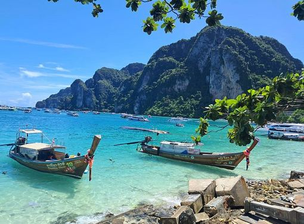
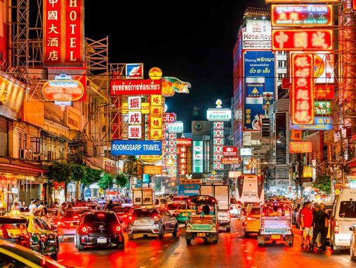
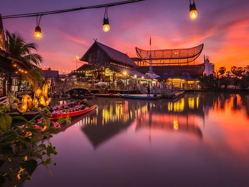
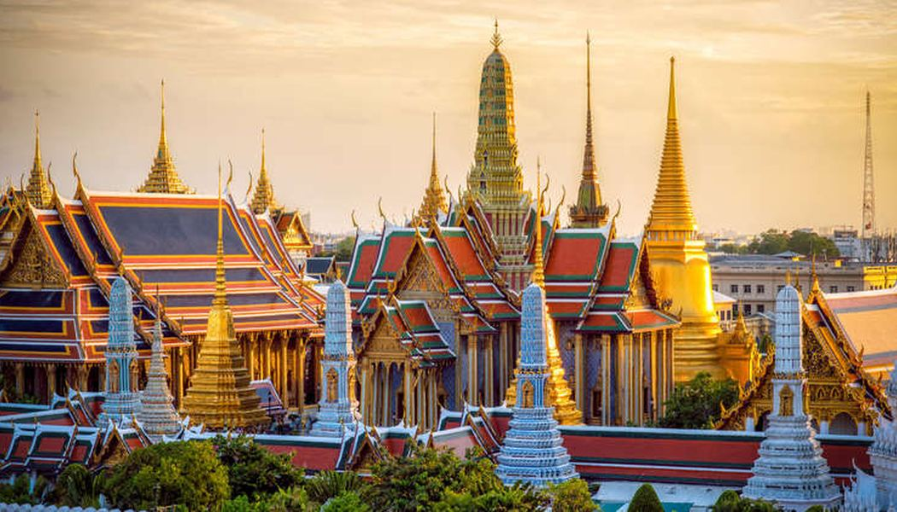
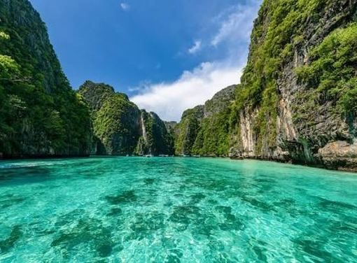

Flights · tap a leg for PNRs
OUTBOM → BKK · Tue 17 NovTG 35202:40 → 08:25Hunar, Kunal, Paarth. Thai Airways, 4 h 15. Mumbai T2 → Suvarnabhumi. 23 kg + 7 kg cabin. Be at T2 by 23:30 on the 16th.
Hunar & Kunal: PNR F7ZFAT (Cleartrip trip 261023326976). Paarth: PNR 8DE2AL (MakeMyTrip NN2AO8UL15587650625). Counters close 90 min before. Fill the Thailand Digital Arrival Card (TDAC) online within 3 days before landing: everyone, every entry.
OUTDhiraj → BKK · Wed 18 Novadd ticketlands 19:00Send the e-ticket and it goes here.
HOPBKK → HKT · Thu 19 Novadd ticketlands 10:00All four. Domestic, ~1 h 25. Don Mueang (DMK) or Suvarnabhumi depending on airline; check which before booking the taxi.
HOPHKT → BKK · Tue 24 Novadd ticketland by ~17:00Dhiraj, Kunal, Paarth. Land early enough for Loy Krathong on the river by 20:00. Hunar flies out of HKT the same day.
HOMEBKK → BOM · Wed 25 NovAI 233820:40 → 00:15 +1Kunal, Paarth. Air India, 5 h 05. Suvarnabhumi → Mumbai T2, lands Thu 26 Nov 00:15. Kunal 30 kg (award ticket), Paarth 25 kg; 7 kg cabin.
Kunal: PNR 8DCMTJ (Air India, ticket 098 2187610634). Paarth: PNR 8DCPU6 (MakeMyTrip). Check-in opens 48 h ahead on the Air India app. Complete India's e-Arrival Card online within 72 h before landing. Leave Sukhumvit by 17:00; Octave sunset at 18:15 is too tight, do it on the 24th instead.
Nine days · coral is Bangkok, teal is Phuket · tap a name to jump to it
Land. Fight night, then Chinatown
- Rajadamnern Knockout card, first bell 19:00
- Yaowarat street food, then the Soi Nana bars
- Or Potong 20-course dinner (Tuesday only)
Closed Tue: Jay Fai, Sühring, Gaggan
Rough spend ppTHB 4,000 · 9,500 with Potong
Slow day for three. Dhiraj lands 19:00
- Jay Fai (Wed only, queue at 08:30) or Krua Apsorn with no wait
- Optional: Wat Arun at sunset, Eagle Nest beer
- Collect Dhiraj, then Thonglor: Dry Wave, Locker Room, Rabbit Hole
Wed only: Sühring, three stars
Rough spend ppTHB 4,000 · 11,500 with Sühring
Land 10:00. Villa is 20 min from the airport
- Jet skis off Bang Tao beach, swim at Surin
- Walk to Catch Beach Club for sunset
- PRU dinner, 10 min up the road (Thu/Fri/Sat only); Suay as the backup
Book PRU for tonight: arrival day, early seating, no driving.
Rough spend ppTHB 2,500 · 9,500 with PRU
Phi Phi boat, fights in Patong
- Early speedboat to Phi Phi with villa pickup: Maya Bay, Pileh, snorkelling
- Patong is 25 min: Bangla Boxing Stadium ~20:30
- Bangla Road: Illuzion, Sugar Club. Grab home
Move the boat to the calmest forecast day
Rough spend ppTHB 6,500
The range, all four. Then home for the beach club
- 09:00 Phuket Shooters, Chalong (40 min). Mor Mu Dong lunch next door
- Karts in Kathu on the way back, 20 min from the villa
- Catch through sunset (walk), Café del Mar club night 10 min away
Rule: range before any alcohol
Rough spend ppTHB 7,500
Surf at home, Old Town night
- Surf lesson on Bang Tao itself if there's swell (Saltwater Dreaming is next door); else wake park, 20 min
- Old Town, 30 min: One Chun late lunch at 15:00, Lard Yai market from 16:30
- Club No. 43, Dibuk House, Zimplex, then Go Benz
Closed Sun: PRU, Chuan Chim
Rough spend ppTHB 3,600
Pick two: canoe, zipline, scuba. Jampa to finish
- Phang Nga sea canoe: Surakul pier is on your side of the island, 35 min
- Or Hanuman World zipline (40 min) or the Racha try-dive with pickup
- Hunar's last night: Jampa tasting, 10 min (PRU is closed Mondays)
Closed Mon: PRU, Go Benz, Go La. Kite at Rawai is 55 min: only if the wind forecast is good.
Rough spend ppTHB 5,500
Hunar out. Loy Krathong on the river
- Optional Muay Thai class at Tiger before the flight
- On the river by 20:00: Tha Tien, ICONSIAM or Asiatique
- Potong / Nusara / Nahm, then BKK Social Club or the Octave rooftop
Rough spend ppTHB 3,500 · 9,500 with Potong
Last day, night flight
- Jay Fai if the 18th didn't happen
- Siam and MBK, a film at House Samyan in the AC
- Leave for the airport by 17:00 for the 20:40 flight
Rough spend ppTHB 1,500
- Sorn seats release Sat Oct 25, noon Thai time
- Nov 10: Michelin 2027 list drops, re-check
- Nov 20–27: PHOODIE food festival, Phuket
- Nov 22: Lard Yai Sunday market
- Nov 24: Loy Krathong
Every place, on your map
Tap any Map button to open that place in Google Maps. Or load all 88 pins at once as layers.
All pins in one go
- Open the Thailand_Boys_Trip_pins.kml file from this chat on a laptop (or save it to Drive).
- Go to mymaps.google.com → Create a new map → Import → pick the file. Seven layers appear, one per type, coloured like the lists below.
- In the Google Maps app on your phone: Saved → Maps. The whole trip is there, with directions to every pin. Share the map with the other three.
Phuket · water
HKTJet ski, Bang Tao beach800–1,100 / 30 minOperators on the sand in front of the beach clubs. No booking. Two per ski.Map
Patong 1,000–1,500, Kamala/Bang Tao 800–1,100. Film the ski from every angle before riding, agree price and time, pay after. Patong has the worst damage-claim scams.
HKTSurf House Phuket, Kata~1,040 each, private laneFlowRider standing wave. Works whatever the sea does. 09:00–22:00.Map
Shared hour 1,000–1,280. Private lane ~4,150/h for up to 8: four of you, no queue. Board, instructor, locker included. Bar with the sunset. 4 Soi Pakbang.
HKTSurf House, Patong1,000–1,280 / hourSecond FlowRider, by Bangla. 09:30–midnight.Map
162/8-11 Thaweewong Rd. Same pricing as Kata; this one for a Patong night.
HKTSurf lesson, Bang Tao (if swell)1,000–1,500 / 1.5 hBang Tao schools are a walk from the villa. Only if the forecast shows waves; late Nov is flat ~60% of days.Map
Check surf-forecast.com for Kata Beach the night before. Phuket Surf +66 93 582 2987, SSS Phuket +66 89 586 9920 (private ~1,500). Bang Tao: Saltwater Dreaming +66 76 390 664 (group 1,400), Talay Surf +66 95 298 8757 (group 1,000). Board only 200–300/h.
HKTPhuket Wake Park950 / 2 hCable wakeboarding, Kathu, 7 km from Patong. Beginner gear free.Map
1 h 750, 2 h 950, 4 h 1,400, day 1,600. 09:00–18:00. Anthem Wake Park closed in 2020; ignore listings.
HKTDiscover Scuba, Racha (Sunrise Divers)4,500Two try-dives, no licence. Clearest water near Phuket. Transfers, gear, lunch in.Map
3 try-dives 5,200. Licensed: Racha Yai 2 dives 3,000, Racha Noi + Yai 3 dives 3,900. Snorkeller on the same boat 2,000–2,500. Shop at 269/24 Patak Rd, Karon, +66 84 626 4646. Similan is the upgrade: 3,800–5,650, 05:30 from Khao Lak.
HKTKiteboarding Asia, Rawai4,500–6,500East-coast kite season starts in November. 2-day beginner course.Map
16/26 Wiset Rd, WhatsApp +66 81 591 4594. Early-season wind is patchy; book Mon 23. Also wingfoil and efoil.
HKTParasailing, Kata / Karon / Patong1,000–1,5005–10 minute flight off the beach. Sold with the jet skis.Map
Agree the price first. Pairs with a lazy Nai Harn or Kata Noi afternoon.
HKTPhi Phi + Maya Bay speedboat (Rassada Pier)900–3,500 + 400 feeFull day with villa pickup (Bang Tao to Rassada ~45 min). Maya Bay: wading only, one hour, 375/hour.Map
Pileh lagoon, Viking Cave, Monkey Beach snorkel, Khai Island. Early-departure (07:00) boats beat the crowd. Park fee 400 usually excluded. Most tours include hotel pickup; Rassada is the main pier.
HKTPhang Nga Bay sea canoe (James Bond Island)2,000–2,500 + 300 feeLongtail through the karsts, kayak into the hongs, lunch at Koh Panyee. Surakul pier is 35 min from Bang Tao.Map
10-hour day from Surakul pier (north, past the airport), max 15 per boat. The better pick for a doubtful forecast. +200 pickup from Phuket Town / Bang Tao. Pin is the airport; pickup is from your villa.
Phuket · land
HKTPhuket Shooters, Chalong~3,100 for 3 gunsThe one range session: Sat 21, all four. 40 min from Bang Tao. Passport, 20+.Map
9mm / .45 / .38 1,250 per 10 rds, .22 1,050, shotgun 1,450. Packages: 9mm + .45 + .22 3,100, with shotgun 3,300, 5-gun 4,950. 12-bay 25 m range. Slot at phuketshooters.com, WhatsApp +66 81 103 2598. Kata 20 min. No alcohol before; instructor, ear and eye protection, insurance included.
HKTPhuket Shooting Range (alt) + karts + ATV890–1,190 / 10 rdsBigger, scrappier range on Patak Rd with go-karts, ATV, paintball on site.Map
Boards reportedly negotiable. Karts ~990–1,200 per 10 min, ATV 30 min ~1,000. Use this if you want everything in one stop; Phuket Shooters for the cleaner range.
HKTHanuman World zipline + luge3,490 (A+)16 ziplines, roller, skywalk, lunch, transfers. 3 hours. Last admission 15:00.Map
B+ 9 lines 2 h 2,990. Ziplines only 16/9/4 lines 2,900/2,200/1,500. 08:00–18:00; luge on site till 21:00. +66 62 979 5533. Not the same as Flying Hanuman in Kathu.
HKTPhuket Kart Speedway, Kathu~990–1,200 / 10 minTwo-stroke racing karts; the fast track. 30 min from Patong. 09:00–19:00.Map
Get the 125cc kart. Patong Go-Kart Speedway is across the road; Power Drive at JungCeylon is the indoor Patong option. +66 89 728 9712.
HKTTiger Muay Thai, Chalong700–800Drop-in beginner class, gloves on loan. Mon–Sat.Map
Beginner slots roughly 10:00 and 17:00; confirm at the desk. Cheaper: Rawai Muay Thai, Dragon, MMA Lab 600; Sasiprapa (Kathu) 400. 7/35 Soi Ta-iad. Closed Sunday.
HKTBangla Boxing Stadium, Patong1,200–1,800Fight nights Fri and Sat, ~20:30 start. Buy on the day.Map
Rawai Boxing Stadium is the cheaper local one at 500–800. Fri 20 after Phi Phi is the slot.
HKTBig Buddha (optional)FreeOnly because it's on the way back from Chalong. Reopened Mar 2026.Map
06:00–18:30. Google said closed for a while; it isn't. Sarongs provided.
Bangkok · things to do
BKKRajadamnern Stadium1,500–4,500Fights every night. Tue 17: Knockout card, first bell 19:00.Map
2nd class 1,500, club 1,800, ringside 2,500, VIP counter with free-flow beer 3,500, VIP lounge 4,500 (door; Klook/GYG cheaper). Wed cards start 18:00. Ten minutes from Yaowarat.
BKKEvolve MMA, EmSphereFree trialFree trial Muay Thai class, level 9, Sukhumvit. Book ahead, no walk-ins.Map
+66 2 124 5509. Book the trial online first; the desk turns away drop-ins.
BKKWat Arun at sunset (optional)200The one temple. Ferry 5 THB from Tha Tien, climb before 17:30.Map
Then Eagle Nest for the beer eye-level with the prang. Skip the Grand Palace: 500 THB, dress code, construction next door until Dec 19.
BKKEagle Nest rooftop, Tha Tien~200 / drinkSunset beer facing Wat Arun. Get there by 17:45 for a balcony seat.Map
Sala Rattanakosin, 47-49 Soi Tha Tian. 16:00–23:00. Drinks are ordinary; the view isn't.
BKKLoy Krathong, Tha Tien Pier (Nov 24)30–150Float a krathong on the river facing Wat Arun, 20:00–23:00.Map
ICONSIAM and Asiatique are the bigger riverside options. Dinner cruises sell out weeks ahead; riverside bars don't. Sky lanterns restricted in Bangkok.
BKKICONSIAM riverfrontFreeLoy Krathong's biggest riverside crowd. Thipsamai no-queue branch inside.Map
Free shuttle boat from Sathorn pier. 10:00–22:00.
BKKAsiatique The RiverfrontFreeNight market on the river, Ferris wheel, Loy Krathong floating point.Map
Free shuttle boat from Sathorn pier 16:00–23:30. 11:00–midnight.
BKKJodd Fairs Ratchada300–500The only big night market open on your Tue/Wed. 17:00–01:00.Map
Grilled seafood, the stewed pork ribs with the queue, mango sticky rice from 60. MRT Thailand Cultural Centre. Chatuchak is weekends only; Jodd Fairs Rama 9 closed in 2025.
BKKSiam Paragon / MBK—Last-day shopping. MBK across the road for cheap electronics and tailors.Map
Thipsamai branch in Paragon with no wait. House Samyan arthouse cinema is one MRT stop away for the heat.
BKKHouse Samyan cinema160Arthouse cinema, Samyan Mitrtown 5F. Thai and Asian indie, air-conditioned.Map
MRT Sam Yan. Good last-afternoon escape before the night flight.
Michelin Guide 2026
HKTPRU★ + Green ★7,200++Phuket's only star, 10 min from the villa. Dinner Tue–Sat, lunch Fri–Sat. Closed Sun–Mon.Map
Order: fixed menu. 'King of the Fruits' (durian, caviar, sea grapes). Kitchen visit mid-meal. Lunch 4,000++. Book prurestaurant.com, card deposit, 3+ weeks. Thu 19, Fri 20 or Sat 21. Resort chic, no flip-flops. +66 76 683 344.
HKTJampaSelected · Green ★1,500–3,000Zero-waste European, 10 min from the villa. Thu–Mon 12:00–22:00. The Monday dinner.Map
Order: the lunchtime 'Jampa Experience' tasting; à la carte all day. +66 76 342 122.
HKTSuay CherngtalaySelected800–1,500Modern Thai, garden, live music. 10 min from the villa. Daily 16:00–23:00.Map
Order: grilled lemongrass lamb chops with papaya salsa; crab cakes with Sriracha aioli; foie gras in betel leaf. suayrestaurant.com, +66 93 339 1890.
HKTOne ChunBib Gourmand300–500Baba family recipes, Old Town shophouse. Daily 10:00–22:00. Cash only.Map
Order: mee hoon gaeng poo (crab curry over rice vermicelli), moo hong (slow-braised pork belly), shrimp relish, fish cakes. 48/1 Thep Krasattri Rd. Call +66 76 355 909 for four; 30-min waits are normal.
HKTGo BenzBib Gourmand80–150Late-night khao tom. Tue–Sun 17:00–01:30, closed Mon. The after-bars stop.Map
Order: khao tom haeng moo krob (dry rice with crispy pork, sells out), kuay jub (rolled noodles in peppery broth), fried fish balls. 163 Krabi Rd. Grab any free seat; no prices posted, ask.
HKTChuan ChimBib Gourmand300–500Old seafood kitchen, Montri Rd. Mon–Sat 12:00–20:30, closed Sun. Slow kitchen.Map
Order: pu pad pong karee (crab with curry powder), crispy fish in red sauce, kai lan with crispy pork. Cash. Expect a long wait for food at peak.
HKTMor Mu DongBib Gourmand300–500Southern seafood in mangrove pavilions, Chalong. Daily 10:00–21:00. Cards OK.Map
Order: the stuffed fried fish (signature), gaeng som pla (sour curry), pla thod khamin (turmeric fried fish), goong pao. Ten minutes from the ranges: lunch on Sat 21. +66 88 766 1634.
HKTRoti Thaew NamBib Gourmand60–15070-year halal breakfast, Old Town. Daily 07:00–12:00.Map
Order: roti with beef curry or massaman chicken; banana-egg roti. Two roti + eggs + massaman ~100.
HKTA Pong Mae SuneeBib Gourmand20–60Coconut crepes off charcoal woks. 09:00–14:00, closed Fri. 5 THB each.Map
Soi Soon Uthit off Yaowarat Rd. Queue at opening; it moves fast.
HKTGo La Hokkien NoodlesSelected80–150Charcoal wok, third generation. 11 Kra Rd. Tue–Sun 11:00–20:00.Map
Order: mee Hokkien pad with an extra egg; seafood porridge. Thai menu, use Google Lens.
HKTO Tao Bang NiaoSelected80–150The Phuket-only taro-oyster-egg stir-fry. 362 Phuket Rd. Daily 16:00–23:00.Map
Order: o tao, crispy seafood omelette. Thai menu on the wall; point. Also at the Lard Yai stalls on Sunday.
HKTMee Sapam (Khun Yai Chian)Selected100–200Hokkien noodles since 1952, 10 min north of town. Daily 08:00–17:00. Air-con, parking.Map
Order: mee sapam with seafood, hoi thod (oyster omelette), Phuket sausage, grass jelly.
HKTLard Yai Sunday marketStreet200–400Thalang Rd, Sun Nov 22 only, 16:00–23:00. Cash / QR.Map
O-tao, a-pong, Hokkien mee, loba. Then the Old Town bars.
HKTRaya (dropped 2026)Not in guide300–600Dibuk Rd mansion. Still open daily 10:30–22:00, still good. Never had a star despite the blogs.Map
Order: crab curry mee hoon, moo hong, tom yum. +66 76 218 155.
BKKSorn★★★ · #12 Asia6,500++Southern Thai tasting. Sukhumvit 26. Mon–Fri & Sun 18:00–22:00. Closed Sat.Map
Order: fixed menu. Tapi River prawns, Phuket lobster, the crab courses, the rice at the end. Book sornfinesouthern.com, +66 99 081 1119. Nov seats release Oct 25, noon ICT, gone in minutes. Smart casual, long trousers, closed shoes.
BKKSühring★★★ · #18 Asia6,200–8,000++Modern German tasting, Yen Akat villa. Wed 18:00 only for you; closed Mon–Tue.Map
Order: fixed menu, family recipes; the duck over the wagyu. Kitchen-counter seats if offered. restaurantsuhring.com, ~60-day window, +66 2 107 2777.
BKKPotong★ · #25 Asia6,300++20-course Thai-Chinese in a 120-year pharmacy, Chinatown. Closed Wed.Map
Order: fixed. 14-day aged duck, layered pad thai with tiger prawn. Opium bar upstairs after. restaurantpotong.com, 6–8 weeks, +66 82 979 3950. Tue 17 or Tue 24.
BKKNusara★ · #5 Asia~5,000++Rooftop facing Wat Pho. Daily 18:00–23:00. Easiest big table to fit.Map
Order: fixed. Signature crab curry with prawn crackers, Thai wagyu pad kaprao, the four regional nam prik. nusarabkk.com, +66 97 293 5549, 6–8 weeks.
BKKNahm★3,900++ setCOMO Metropolitan, Sathon. Daily 18:00–23:30. The one with à la carte, so four can share.Map
Order: Heritage 8-course 3,900, or à la carte: gaeng pu bai cha plu (crab curry with betel leaf, 1,350), kua gapi relish (860), tom yum gung (450). OpenTable, 1–3 weeks fine. Long trousers (they lend). Ask for the poolside terrace.
BKKLe Du★ · #36 Asia3,900–4,500++Seasonal modern Thai, Silom. Mon–Sat 18:00–23:00.Map
Order: 4-course 3,900 or 6-course 4,500; add the river prawn. Same chef as Nusara. ledubkk.com, 2–6 weeks.
BKKSamrub Samrub Thai★~5,000++Regional Thai tasting, menu rotates every 2 months. Soi Yommarat, Silom. Tue–Sat.Map
Order: fixed; ask which region is on. Book by Instagram DM only, 4–8 weeks: DM today. Skip the rice-wine pairing.
BKKGaggan (doesn't fit)★ · #3 Asia~9,000++Closed Tue and Wed, so it misses every Bangkok day. Listed so nobody wonders.Map
Booking opens 60 days out at 10:00 ICT. Next time.
BKKJay Fai★1,500–2,500Crab omelette. Wed–Sat 09:00–19:30 only. Cash. Paper waitlist before 09:00.Map
Order: kai jeow poo (crab omelette, 1,500), pad kee mao talay (seafood drunken noodles), goong pad pong karee, tom yum haeng, abalone with kai lan. Four share 3–4 dishes. A 4,000 'special' omelette exists: confirm 1,500 before she cooks. Some days there's no queue at 11:00; others it's three hours.
BKKKrua Apsorn (Sam Sen)Bib Gourmand250–450Home-style Thai, Dusit. Daily 10:00–20:00. The Jay Fai plan B, no wait.Map
Order: yellow curry with prawns and crispy lotus root (signature), tom yum, cowslip-flower stir-fry, fried king mackerel, crab omelette at a fraction of Jay Fai's price.
BKKPad Thai Fai Ta Lu (Dinso Rd)Bib Gourmand200–500Chef's pad thai, Old Town. Daily 10:00–midnight. Cards OK. Small portions.Map
Order: smoked pork jowl pad thai, prawns in shell. Five minutes from Thipsamai without the line.
BKKUrai Braised GooseBib Gourmand150–300Song Wat Rd, Chinatown. 10–13 & 16–19. Night-one stop before Yaowarat.Map
Order: han palo (five-spice braised goose, ~250), the meatball soup, the garlicky vinegar dip. Find the auntie to order.
BKKRung Rueang Pork NoodlesBib Gourmand70–150Sukhumvit 26, same soi as Sorn and Bar Us. Daily 08:00–17:00.Map
Order: dry tom yum egg noodles, tom yum noodle soup, crispy fish skin. Left side walking in; not the lookalike opposite.
BKKSomsak Pu ObBib Gourmand200–400Crab baked with glass noodles, Thonburi side. Tue–Sun 16:00–21:30. Long waits.Map
Order: pu ob woon sen (roe version), boiled cockles while you wait. Arrive at opening or expect 1–3 hours.
BKKNai Ek Roll NoodleBib Gourmand70–150Yaowarat Soi 9. Guay chub in peppery broth. 07:30–00:30 daily.Map
Order: rolled noodle soup with crispy pork and offal; crispy pork rice. Start of the Chinatown crawl.
BKKThipsamai (dropped 2026)Not in guide150–250Egg-wrapped pad thai next to Jay Fai. Closed Tue. 09:00–midnight.Map
Order: pad thai haw kai goong sod, the mandarin orange juice. Branches in Paragon and ICONSIAM have no queue.
Bars · 50 Best & CN Traveller
BKKBar Us#4 World · #6 Asia500–700 / drinkSukhumvit 26. Three-course 'liquid cuisine' menu. Tue–Sun 18:00. Reserve.Map
us-bar.com, first seating on a weeknight. Beef & onion, boiled egg martini, vetiver negroni. Lime next door for tropical fruit cocktails.
BKKDry Wave Cocktail Studio#27 World · #4 Asia450–600Thonglor 13, 2F Sodality. Thailand's best bar 2026. Daily 19:00–01:00. Reserve.Map
'What's That Sour?', 'Tea and Butter'. Start the Thonglor night here, then Locker Room and Rabbit Hole.
BKKBKK Social Club#30 World550–700Four Seasons, on the river. Daily 17:00–00:00. Loy Krathong nightcap.Map
Buenos Aires salon; Tatler best service in Thailand 2026. Reserve.
BKKLennon's#7 Asia450–650Rosewood 30F. 6,000-vinyl listening lounge, DJs. Daily 17:00–00:00. Smart casual.Map
SevenRooms. 'Bangkok Beats' menu: SagoREgroni, Thai milk tea.
BKKBar Sathorn#17 Asia400–550Heritage house beside the W. Daily 14:30–01:00. Third stop on a Sathorn night.Map
Skyline Drift, Bangkok Brunch. Good bar snacks.
BKKOpium#25 Asia450–600Upstairs from Potong, Chinatown. Closed Wed. Smart casual, 2,000 deposit.Map
The natural end to the Potong dinner, or a stop on the Chinatown crawl.
BKKGOD (Genius On Drugs)#31 Asia400–50025/27 Soi Nana. Pull the shaker door handle. Daily 18:00–01:00.Map
Pianist Fri–Sun 21:00–23:00. Food-paired cocktails; the Trinity with uni.
BKKTep BarCN Traveller450–600Soi Nana. Ya dong infusions, live traditional Thai music. 18:00–00:00. Book.Map
Band on the ground floor (loud, Mon and Wed especially); 2F for groups who want to talk.
BKKTeens of ThailandSoi Nana350–450Gin bar behind a low wooden door. 12:00–01:00.Map
Thai tea gin, chrysanthemum G&T. Small; go early.
BKKThe Bamboo BarCN Traveller500–700Mandarin Oriental. Live jazz since 1953. 17:00–01:00. The proper-shoes night.Map
Mango sticky rice cocktail. Cigar lounge.
BKKSing Sing TheaterCN Traveller350–500Sukhumvit 45. Shanghai-opium-den club, dancing after 23:00. Free entry; book a table.Map
Thu–Sat is the crowd.
BKKOctave RooftopRooftop370–450Marriott Sukhumvit 57, 45–49F. Happy hour 17:00–19:00 half price. Sunset 18:15.Map
DJ from 20:00. Reserve for the top deck; 1,800 minimum on busy nights.
BKKAetherRooftop · new600 entry incl. 450 creditDusit Central Park 44F, opened Dec 2025. 360°, house music till 02:00.Map
Drinks only, no food. Pay at 42F, lift to 44.
BKK#FindTheLockerRoomSpeakeasy350–450406 Soi Thonglor. Slide the right gym locker. 18:00–01:45. Walk-in.Map
Upstairs. Smoke-free.
BKKRabbit HoleThonglor350–450125 Thonglor. Hidden door, three floors. 19:00–02:00. Walk-in.Map
Mexico City, Tokyo. No food.
BKKBeamClubEntry varies72 Thonglor. House/techno main room, hip-hop room. If the night goes past 01:00.Map
Dress rules at the door (no sandals), no cameras. Lockers.
BKKSala SanehaBest new bar 2026300–500Soi Decho, Silom. Wine bar + tiny cinema + bookstore in a heritage house. Closed Tue.Map
For the film crew. 18:00–00:00; from 11:00 on weekends.
Phuket · nights
HKTIlluzion, Bangla Road#9 DJ Mag clubs1,000–2,500 / night21:00–04:00. Free to 2,000 entry; 1,200 open-bar pass. 20+ with ID.Map
Also on Bangla: Sugar Club (hip-hop), Armania, Skylight Rooftop. Beer 100–180, cocktails 200–350. Ignore the touts. Tables from ~8,000.
HKTCatch Beach Club, Bang TaoBeach club1,500 bedOn your beach. Arrive 15:00, stay through sunset and the fire show. 07:30–00:00.Map
Cabanas from 3,000 part-credited. Book beds in advance. +66 65 348 2017.
HKTCafé del Mar, Kamala#37 DJ Mag1,500–3,000 minClub nights Wed–Sat after 22:00. Saturday after Catch.Map
11:00–00:00. Fire and red-light night mode after dark.
HKTBaba Nest, Sri PanwaSunset2,000–3,000 minRooftop ringed by an infinity pool, Cape Panwa. 17:00–20:00. Book and prepay days ahead.Map
Mexican-leaning food. Skip if cloudy. +66 76 371 000.
HKTClub No. 43Old Town300–400Phuket's first mixology bar. Quiet, precise. 18:00–00:00.Map
Order the Sakura. Snacks only.
HKTDibuk HouseOld Town300–40010 Yaowarat Rd. Local spirits, R&B. 18:30–01:00, closed Wed. Cash.Map
Perfume Ash, Green Harvest. ATM nearby; cards not taken.
HKTZimplex Mixology LaboratoryOld Town200–350Lab-theme shot bar on Phang Nga Rd. Tue–Sun 19:30–23:00. Shots only.Map
Reserve 20:00; it's small.
Beaches, sunsets, airports
HKTPromthep CapeFree; parking 20The classic sunset, but 55 min from Bang Tao. Only if you're already south. Car park full by 17:30.Map
Walk 8 min out to the cape tip for the quiet spot.
HKTWindmill ViewpointFreeThree minutes from Promthep, half the crowd. Arrive by 16:30.Map
Parking for ~15 cars; roadside works.
HKTNai Harn BeachLoungers 100–200Calmest swim in late November, but 55 min south. Surin and Bang Tao are your home beaches now.Map
Kiteboarding Asia is ten minutes away in Rawai.
HKTSurin BeachFreeFive minutes south of Bang Tao. Cleaner water than Bang Tao itself, no beach clubs, good sunset.Map
Laem Singh viewpoint is just past it on the Kamala road.
HKTKata Noi BeachFreeCleaner, quieter than Kata. Hillside sunset bars. Longtails to Freedom Beach from the left end.Map
Surf House Kata is a ten-minute walk north.
HKTPhuket Airport (HKT)—Thu 19 arrival 10:00; Tue 24 departures. 45–60 min to Kata/Patong, 30 to Old Town.Map
Ride-hailing pickups are a short walk from the terminal.
BKKSuvarnabhumi Airport (BKK)—Wed 25 night flight. Allow 60–90 min from Sukhumvit by road; Airport Rail Link 30 min to Phaya Thai.Map
Arrive 3 hours before an international departure.

Things to do
Everything here is bookable the day before except the zipline and scuba. Tap a row for details, Map to navigate.
Water
Jet ski, Bang Tao beach800–1,100 / 30 minOperators on the sand in front of the beach clubs. No booking. Two per ski.Map
Patong 1,000–1,500, Kamala/Bang Tao 800–1,100. Film the ski from every angle before riding, agree price and time, pay after. Patong has the worst damage-claim scams.
Surf House Phuket, Kata~1,040 each, private laneFlowRider standing wave. Works whatever the sea does. 09:00–22:00.Map
Shared hour 1,000–1,280. Private lane ~4,150/h for up to 8: four of you, no queue. Board, instructor, locker included. Bar with the sunset. 4 Soi Pakbang.
Surf House, Patong1,000–1,280 / hourSecond FlowRider, by Bangla. 09:30–midnight.Map
162/8-11 Thaweewong Rd. Same pricing as Kata; this one for a Patong night.
Surf lesson, Bang Tao (if swell)1,000–1,500 / 1.5 hBang Tao schools are a walk from the villa. Only if the forecast shows waves; late Nov is flat ~60% of days.Map
Check surf-forecast.com for Kata Beach the night before. Phuket Surf +66 93 582 2987, SSS Phuket +66 89 586 9920 (private ~1,500). Bang Tao: Saltwater Dreaming +66 76 390 664 (group 1,400), Talay Surf +66 95 298 8757 (group 1,000). Board only 200–300/h.
Phuket Wake Park950 / 2 hCable wakeboarding, Kathu, 7 km from Patong. Beginner gear free.Map
1 h 750, 2 h 950, 4 h 1,400, day 1,600. 09:00–18:00. Anthem Wake Park closed in 2020; ignore listings.
Discover Scuba, Racha (Sunrise Divers)4,500Two try-dives, no licence. Clearest water near Phuket. Transfers, gear, lunch in.Map
3 try-dives 5,200. Licensed: Racha Yai 2 dives 3,000, Racha Noi + Yai 3 dives 3,900. Snorkeller on the same boat 2,000–2,500. Shop at 269/24 Patak Rd, Karon, +66 84 626 4646. Similan is the upgrade: 3,800–5,650, 05:30 from Khao Lak.
Kiteboarding Asia, Rawai4,500–6,500East-coast kite season starts in November. 2-day beginner course.Map
16/26 Wiset Rd, WhatsApp +66 81 591 4594. Early-season wind is patchy; book Mon 23. Also wingfoil and efoil.
Parasailing, Kata / Karon / Patong1,000–1,5005–10 minute flight off the beach. Sold with the jet skis.Map
Agree the price first. Pairs with a lazy Nai Harn or Kata Noi afternoon.
Phi Phi + Maya Bay speedboat (Rassada Pier)900–3,500 + 400 feeFull day with villa pickup (Bang Tao to Rassada ~45 min). Maya Bay: wading only, one hour, 375/hour.Map
Pileh lagoon, Viking Cave, Monkey Beach snorkel, Khai Island. Early-departure (07:00) boats beat the crowd. Park fee 400 usually excluded. Most tours include hotel pickup; Rassada is the main pier.
Phang Nga Bay sea canoe (James Bond Island)2,000–2,500 + 300 feeLongtail through the karsts, kayak into the hongs, lunch at Koh Panyee. Surakul pier is 35 min from Bang Tao.Map
10-hour day from Surakul pier (north, past the airport), max 15 per boat. The better pick for a doubtful forecast. +200 pickup from Phuket Town / Bang Tao. Pin is the airport; pickup is from your villa.
Land
Phuket Shooters, Chalong~3,100 for 3 gunsThe one range session: Sat 21, all four. 40 min from Bang Tao. Passport, 20+.Map
9mm / .45 / .38 1,250 per 10 rds, .22 1,050, shotgun 1,450. Packages: 9mm + .45 + .22 3,100, with shotgun 3,300, 5-gun 4,950. 12-bay 25 m range. Slot at phuketshooters.com, WhatsApp +66 81 103 2598. Kata 20 min. No alcohol before; instructor, ear and eye protection, insurance included.
Phuket Shooting Range (alt) + karts + ATV890–1,190 / 10 rdsBigger, scrappier range on Patak Rd with go-karts, ATV, paintball on site.Map
Boards reportedly negotiable. Karts ~990–1,200 per 10 min, ATV 30 min ~1,000. Use this if you want everything in one stop; Phuket Shooters for the cleaner range.
Hanuman World zipline + luge3,490 (A+)16 ziplines, roller, skywalk, lunch, transfers. 3 hours. Last admission 15:00.Map
B+ 9 lines 2 h 2,990. Ziplines only 16/9/4 lines 2,900/2,200/1,500. 08:00–18:00; luge on site till 21:00. +66 62 979 5533. Not the same as Flying Hanuman in Kathu.
Phuket Kart Speedway, Kathu~990–1,200 / 10 minTwo-stroke racing karts; the fast track. 30 min from Patong. 09:00–19:00.Map
Get the 125cc kart. Patong Go-Kart Speedway is across the road; Power Drive at JungCeylon is the indoor Patong option. +66 89 728 9712.
Tiger Muay Thai, Chalong700–800Drop-in beginner class, gloves on loan. Mon–Sat.Map
Beginner slots roughly 10:00 and 17:00; confirm at the desk. Cheaper: Rawai Muay Thai, Dragon, MMA Lab 600; Sasiprapa (Kathu) 400. 7/35 Soi Ta-iad. Closed Sunday.
Bangla Boxing Stadium, Patong1,200–1,800Fight nights Fri and Sat, ~20:30 start. Buy on the day.Map
Rawai Boxing Stadium is the cheaper local one at 500–800. Fri 20 after Phi Phi is the slot.
Big Buddha (optional)FreeOnly because it's on the way back from Chalong. Reopened Mar 2026.Map
06:00–18:30. Google said closed for a while; it isn't. Sarongs provided.
Bangkok
Rajadamnern Stadium1,500–4,500Fights every night. Tue 17: Knockout card, first bell 19:00.Map
2nd class 1,500, club 1,800, ringside 2,500, VIP counter with free-flow beer 3,500, VIP lounge 4,500 (door; Klook/GYG cheaper). Wed cards start 18:00. Ten minutes from Yaowarat.
Evolve MMA, EmSphereFree trialFree trial Muay Thai class, level 9, Sukhumvit. Book ahead, no walk-ins.Map
+66 2 124 5509. Book the trial online first; the desk turns away drop-ins.
Wat Arun at sunset (optional)200The one temple. Ferry 5 THB from Tha Tien, climb before 17:30.Map
Then Eagle Nest for the beer eye-level with the prang. Skip the Grand Palace: 500 THB, dress code, construction next door until Dec 19.
Eagle Nest rooftop, Tha Tien~200 / drinkSunset beer facing Wat Arun. Get there by 17:45 for a balcony seat.Map
Sala Rattanakosin, 47-49 Soi Tha Tian. 16:00–23:00. Drinks are ordinary; the view isn't.
Loy Krathong, Tha Tien Pier (Nov 24)30–150Float a krathong on the river facing Wat Arun, 20:00–23:00.Map
ICONSIAM and Asiatique are the bigger riverside options. Dinner cruises sell out weeks ahead; riverside bars don't. Sky lanterns restricted in Bangkok.
ICONSIAM riverfrontFreeLoy Krathong's biggest riverside crowd. Thipsamai no-queue branch inside.Map
Free shuttle boat from Sathorn pier. 10:00–22:00.
Asiatique The RiverfrontFreeNight market on the river, Ferris wheel, Loy Krathong floating point.Map
Free shuttle boat from Sathorn pier 16:00–23:30. 11:00–midnight.
Jodd Fairs Ratchada300–500The only big night market open on your Tue/Wed. 17:00–01:00.Map
Grilled seafood, the stewed pork ribs with the queue, mango sticky rice from 60. MRT Thailand Cultural Centre. Chatuchak is weekends only; Jodd Fairs Rama 9 closed in 2025.
Siam Paragon / MBK—Last-day shopping. MBK across the road for cheap electronics and tailors.Map
Thipsamai branch in Paragon with no wait. House Samyan arthouse cinema is one MRT stop away for the heat.
House Samyan cinema160Arthouse cinema, Samyan Mitrtown 5F. Thai and Asian indie, air-conditioned.Map
MRT Sam Yan. Good last-afternoon escape before the night flight.

Where to eat
Stars, Bib Gourmands and the Old Town institutions. Price per head; ++ adds about 18% service and VAT. Tap for what to order.
Bangkok · stars
Sorn★★★ · #12 Asia6,500++Southern Thai tasting. Sukhumvit 26. Mon–Fri & Sun 18:00–22:00. Closed Sat.Map
Order: fixed menu. Tapi River prawns, Phuket lobster, the crab courses, the rice at the end. Book sornfinesouthern.com, +66 99 081 1119. Nov seats release Oct 25, noon ICT, gone in minutes. Smart casual, long trousers, closed shoes.
Sühring★★★ · #18 Asia6,200–8,000++Modern German tasting, Yen Akat villa. Wed 18:00 only for you; closed Mon–Tue.Map
Order: fixed menu, family recipes; the duck over the wagyu. Kitchen-counter seats if offered. restaurantsuhring.com, ~60-day window, +66 2 107 2777.
Potong★ · #25 Asia6,300++20-course Thai-Chinese in a 120-year pharmacy, Chinatown. Closed Wed.Map
Order: fixed. 14-day aged duck, layered pad thai with tiger prawn. Opium bar upstairs after. restaurantpotong.com, 6–8 weeks, +66 82 979 3950. Tue 17 or Tue 24.
Nusara★ · #5 Asia~5,000++Rooftop facing Wat Pho. Daily 18:00–23:00. Easiest big table to fit.Map
Order: fixed. Signature crab curry with prawn crackers, Thai wagyu pad kaprao, the four regional nam prik. nusarabkk.com, +66 97 293 5549, 6–8 weeks.
Nahm★3,900++ setCOMO Metropolitan, Sathon. Daily 18:00–23:30. The one with à la carte, so four can share.Map
Order: Heritage 8-course 3,900, or à la carte: gaeng pu bai cha plu (crab curry with betel leaf, 1,350), kua gapi relish (860), tom yum gung (450). OpenTable, 1–3 weeks fine. Long trousers (they lend). Ask for the poolside terrace.
Le Du★ · #36 Asia3,900–4,500++Seasonal modern Thai, Silom. Mon–Sat 18:00–23:00.Map
Order: 4-course 3,900 or 6-course 4,500; add the river prawn. Same chef as Nusara. ledubkk.com, 2–6 weeks.
Samrub Samrub Thai★~5,000++Regional Thai tasting, menu rotates every 2 months. Soi Yommarat, Silom. Tue–Sat.Map
Order: fixed; ask which region is on. Book by Instagram DM only, 4–8 weeks: DM today. Skip the rice-wine pairing.
Gaggan (doesn't fit)★ · #3 Asia~9,000++Closed Tue and Wed, so it misses every Bangkok day. Listed so nobody wonders.Map
Booking opens 60 days out at 10:00 ICT. Next time.
Jay Fai★1,500–2,500Crab omelette. Wed–Sat 09:00–19:30 only. Cash. Paper waitlist before 09:00.Map
Order: kai jeow poo (crab omelette, 1,500), pad kee mao talay (seafood drunken noodles), goong pad pong karee, tom yum haeng, abalone with kai lan. Four share 3–4 dishes. A 4,000 'special' omelette exists: confirm 1,500 before she cooks. Some days there's no queue at 11:00; others it's three hours.
Bangkok · Bib Gourmand & street
Krua Apsorn (Sam Sen)Bib Gourmand250–450Home-style Thai, Dusit. Daily 10:00–20:00. The Jay Fai plan B, no wait.Map
Order: yellow curry with prawns and crispy lotus root (signature), tom yum, cowslip-flower stir-fry, fried king mackerel, crab omelette at a fraction of Jay Fai's price.
Pad Thai Fai Ta Lu (Dinso Rd)Bib Gourmand200–500Chef's pad thai, Old Town. Daily 10:00–midnight. Cards OK. Small portions.Map
Order: smoked pork jowl pad thai, prawns in shell. Five minutes from Thipsamai without the line.
Urai Braised GooseBib Gourmand150–300Song Wat Rd, Chinatown. 10–13 & 16–19. Night-one stop before Yaowarat.Map
Order: han palo (five-spice braised goose, ~250), the meatball soup, the garlicky vinegar dip. Find the auntie to order.
Rung Rueang Pork NoodlesBib Gourmand70–150Sukhumvit 26, same soi as Sorn and Bar Us. Daily 08:00–17:00.Map
Order: dry tom yum egg noodles, tom yum noodle soup, crispy fish skin. Left side walking in; not the lookalike opposite.
Somsak Pu ObBib Gourmand200–400Crab baked with glass noodles, Thonburi side. Tue–Sun 16:00–21:30. Long waits.Map
Order: pu ob woon sen (roe version), boiled cockles while you wait. Arrive at opening or expect 1–3 hours.
Nai Ek Roll NoodleBib Gourmand70–150Yaowarat Soi 9. Guay chub in peppery broth. 07:30–00:30 daily.Map
Order: rolled noodle soup with crispy pork and offal; crispy pork rice. Start of the Chinatown crawl.
Thipsamai (dropped 2026)Not in guide150–250Egg-wrapped pad thai next to Jay Fai. Closed Tue. 09:00–midnight.Map
Order: pad thai haw kai goong sod, the mandarin orange juice. Branches in Paragon and ICONSIAM have no queue.
Phuket · the big one
PRU★ + Green ★7,200++Phuket's only star, 10 min from the villa. Dinner Tue–Sat, lunch Fri–Sat. Closed Sun–Mon.Map
Order: fixed menu. 'King of the Fruits' (durian, caviar, sea grapes). Kitchen visit mid-meal. Lunch 4,000++. Book prurestaurant.com, card deposit, 3+ weeks. Thu 19, Fri 20 or Sat 21. Resort chic, no flip-flops. +66 76 683 344.
Phuket · Bib Gourmand & Old Town
JampaSelected · Green ★1,500–3,000Zero-waste European, 10 min from the villa. Thu–Mon 12:00–22:00. The Monday dinner.Map
Order: the lunchtime 'Jampa Experience' tasting; à la carte all day. +66 76 342 122.
Suay CherngtalaySelected800–1,500Modern Thai, garden, live music. 10 min from the villa. Daily 16:00–23:00.Map
Order: grilled lemongrass lamb chops with papaya salsa; crab cakes with Sriracha aioli; foie gras in betel leaf. suayrestaurant.com, +66 93 339 1890.
One ChunBib Gourmand300–500Baba family recipes, Old Town shophouse. Daily 10:00–22:00. Cash only.Map
Order: mee hoon gaeng poo (crab curry over rice vermicelli), moo hong (slow-braised pork belly), shrimp relish, fish cakes. 48/1 Thep Krasattri Rd. Call +66 76 355 909 for four; 30-min waits are normal.
Go BenzBib Gourmand80–150Late-night khao tom. Tue–Sun 17:00–01:30, closed Mon. The after-bars stop.Map
Order: khao tom haeng moo krob (dry rice with crispy pork, sells out), kuay jub (rolled noodles in peppery broth), fried fish balls. 163 Krabi Rd. Grab any free seat; no prices posted, ask.
Chuan ChimBib Gourmand300–500Old seafood kitchen, Montri Rd. Mon–Sat 12:00–20:30, closed Sun. Slow kitchen.Map
Order: pu pad pong karee (crab with curry powder), crispy fish in red sauce, kai lan with crispy pork. Cash. Expect a long wait for food at peak.
Mor Mu DongBib Gourmand300–500Southern seafood in mangrove pavilions, Chalong. Daily 10:00–21:00. Cards OK.Map
Order: the stuffed fried fish (signature), gaeng som pla (sour curry), pla thod khamin (turmeric fried fish), goong pao. Ten minutes from the ranges: lunch on Sat 21. +66 88 766 1634.
Roti Thaew NamBib Gourmand60–15070-year halal breakfast, Old Town. Daily 07:00–12:00.Map
Order: roti with beef curry or massaman chicken; banana-egg roti. Two roti + eggs + massaman ~100.
A Pong Mae SuneeBib Gourmand20–60Coconut crepes off charcoal woks. 09:00–14:00, closed Fri. 5 THB each.Map
Soi Soon Uthit off Yaowarat Rd. Queue at opening; it moves fast.
Go La Hokkien NoodlesSelected80–150Charcoal wok, third generation. 11 Kra Rd. Tue–Sun 11:00–20:00.Map
Order: mee Hokkien pad with an extra egg; seafood porridge. Thai menu, use Google Lens.
O Tao Bang NiaoSelected80–150The Phuket-only taro-oyster-egg stir-fry. 362 Phuket Rd. Daily 16:00–23:00.Map
Order: o tao, crispy seafood omelette. Thai menu on the wall; point. Also at the Lard Yai stalls on Sunday.
Mee Sapam (Khun Yai Chian)Selected100–200Hokkien noodles since 1952, 10 min north of town. Daily 08:00–17:00. Air-con, parking.Map
Order: mee sapam with seafood, hoi thod (oyster omelette), Phuket sausage, grass jelly.
Lard Yai Sunday marketStreet200–400Thalang Rd, Sun Nov 22 only, 16:00–23:00. Cash / QR.Map
O-tao, a-pong, Hokkien mee, loba. Then the Old Town bars.
Raya (dropped 2026)Not in guide300–600Dibuk Rd mansion. Still open daily 10:30–22:00, still good. Never had a star despite the blogs.Map
Order: crab curry mee hoon, moo hong, tom yum. +66 76 218 155.

Nights
Bar Us is #4 in the world this year and Dry Wave is Thailand's best. Reserve those two and BKK Social Club; walk into the rest.
Bangkok · the ranked bars
Bar Us#4 World · #6 Asia500–700 / drinkSukhumvit 26. Three-course 'liquid cuisine' menu. Tue–Sun 18:00. Reserve.Map
us-bar.com, first seating on a weeknight. Beef & onion, boiled egg martini, vetiver negroni. Lime next door for tropical fruit cocktails.
Dry Wave Cocktail Studio#27 World · #4 Asia450–600Thonglor 13, 2F Sodality. Thailand's best bar 2026. Daily 19:00–01:00. Reserve.Map
'What's That Sour?', 'Tea and Butter'. Start the Thonglor night here, then Locker Room and Rabbit Hole.
BKK Social Club#30 World550–700Four Seasons, on the river. Daily 17:00–00:00. Loy Krathong nightcap.Map
Buenos Aires salon; Tatler best service in Thailand 2026. Reserve.
Lennon's#7 Asia450–650Rosewood 30F. 6,000-vinyl listening lounge, DJs. Daily 17:00–00:00. Smart casual.Map
SevenRooms. 'Bangkok Beats' menu: SagoREgroni, Thai milk tea.
Bar Sathorn#17 Asia400–550Heritage house beside the W. Daily 14:30–01:00. Third stop on a Sathorn night.Map
Skyline Drift, Bangkok Brunch. Good bar snacks.
Opium#25 Asia450–600Upstairs from Potong, Chinatown. Closed Wed. Smart casual, 2,000 deposit.Map
The natural end to the Potong dinner, or a stop on the Chinatown crawl.
GOD (Genius On Drugs)#31 Asia400–50025/27 Soi Nana. Pull the shaker door handle. Daily 18:00–01:00.Map
Pianist Fri–Sun 21:00–23:00. Food-paired cocktails; the Trinity with uni.
Tep BarCN Traveller450–600Soi Nana. Ya dong infusions, live traditional Thai music. 18:00–00:00. Book.Map
Band on the ground floor (loud, Mon and Wed especially); 2F for groups who want to talk.
The Bamboo BarCN Traveller500–700Mandarin Oriental. Live jazz since 1953. 17:00–01:00. The proper-shoes night.Map
Mango sticky rice cocktail. Cigar lounge.
Sing Sing TheaterCN Traveller350–500Sukhumvit 45. Shanghai-opium-den club, dancing after 23:00. Free entry; book a table.Map
Thu–Sat is the crowd.
Bangkok · rooftops, speakeasies, clubs
Teens of ThailandSoi Nana350–450Gin bar behind a low wooden door. 12:00–01:00.Map
Thai tea gin, chrysanthemum G&T. Small; go early.
Octave RooftopRooftop370–450Marriott Sukhumvit 57, 45–49F. Happy hour 17:00–19:00 half price. Sunset 18:15.Map
DJ from 20:00. Reserve for the top deck; 1,800 minimum on busy nights.
AetherRooftop · new600 entry incl. 450 creditDusit Central Park 44F, opened Dec 2025. 360°, house music till 02:00.Map
Drinks only, no food. Pay at 42F, lift to 44.
#FindTheLockerRoomSpeakeasy350–450406 Soi Thonglor. Slide the right gym locker. 18:00–01:45. Walk-in.Map
Upstairs. Smoke-free.
Rabbit HoleThonglor350–450125 Thonglor. Hidden door, three floors. 19:00–02:00. Walk-in.Map
Mexico City, Tokyo. No food.
BeamClubEntry varies72 Thonglor. House/techno main room, hip-hop room. If the night goes past 01:00.Map
Dress rules at the door (no sandals), no cameras. Lockers.
Sala SanehaBest new bar 2026300–500Soi Decho, Silom. Wine bar + tiny cinema + bookstore in a heritage house. Closed Tue.Map
For the film crew. 18:00–00:00; from 11:00 on weekends.
Phuket · nights
Illuzion, Bangla Road#9 DJ Mag clubs1,000–2,500 / night21:00–04:00. Free to 2,000 entry; 1,200 open-bar pass. 20+ with ID.Map
Also on Bangla: Sugar Club (hip-hop), Armania, Skylight Rooftop. Beer 100–180, cocktails 200–350. Ignore the touts. Tables from ~8,000.
Catch Beach Club, Bang TaoBeach club1,500 bedOn your beach. Arrive 15:00, stay through sunset and the fire show. 07:30–00:00.Map
Cabanas from 3,000 part-credited. Book beds in advance. +66 65 348 2017.
Café del Mar, Kamala#37 DJ Mag1,500–3,000 minClub nights Wed–Sat after 22:00. Saturday after Catch.Map
11:00–00:00. Fire and red-light night mode after dark.
Baba Nest, Sri PanwaSunset2,000–3,000 minRooftop ringed by an infinity pool, Cape Panwa. 17:00–20:00. Book and prepay days ahead.Map
Mexican-leaning food. Skip if cloudy. +66 76 371 000.
Club No. 43Old Town300–400Phuket's first mixology bar. Quiet, precise. 18:00–00:00.Map
Order the Sakura. Snacks only.
Dibuk HouseOld Town300–40010 Yaowarat Rd. Local spirits, R&B. 18:30–01:00, closed Wed. Cash.Map
Perfume Ash, Green Harvest. ATM nearby; cards not taken.
Zimplex Mixology LaboratoryOld Town200–350Lab-theme shot bar on Phang Nga Rd. Tue–Sun 19:30–23:00. Shots only.Map
Reserve 20:00; it's small.
Sunsets & beaches
Promthep CapeFree; parking 20The classic sunset, but 55 min from Bang Tao. Only if you're already south. Car park full by 17:30.Map
Walk 8 min out to the cape tip for the quiet spot.
Windmill ViewpointFreeThree minutes from Promthep, half the crowd. Arrive by 16:30.Map
Parking for ~15 cars; roadside works.
Nai Harn BeachLoungers 100–200Calmest swim in late November, but 55 min south. Surin and Bang Tao are your home beaches now.Map
Kiteboarding Asia is ten minutes away in Rawai.
Surin BeachFreeFive minutes south of Bang Tao. Cleaner water than Bang Tao itself, no beach clubs, good sunset.Map
Laem Singh viewpoint is just past it on the Kamala road.
Kata Noi BeachFreeCleaner, quieter than Kata. Hillside sunset bars. Longtails to Freedom Beach from the left end.Map
Surf House Kata is a ten-minute walk north.

Who owes what
Add what you paid, pick who it's for, and the page works out the fewest transfers to square everyone. Balances in INR; THB converts at the rate below.
Balances
Settle up · fewest transfers
Everything so far

Book now
Ticks save on this phone only.